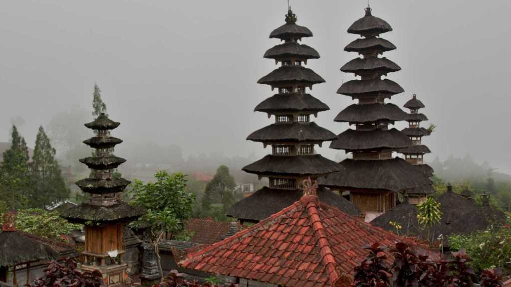

Desa Wisata Pinge
Sejarah Desa Pinge
Desa Wisata Pinge terletak di desa Baru, Kecamatan Marga, Kabupaten Tabanan. Desa ini berada pada ketinggian 500 meter diatas permukaan laut. Asal muasal atau sejarah nama desa Pinge ini adalah karena di salah satu pura peninggalan sejarah Bali kuno di desa ini yang bernama Pura Natar Jemeng terdapat sebuah cempaka putih yang tumbuh sangat besar, nama “pinge” sendiri menurut warga setempat berarti “putih”, sejak saat itu tempat dimana cempaka putih tersebut tumbuh besar dinamakan Banjar Pinge sampai sekarang ini.
Desa wisata Pinge, merupakan desa warisan budaya Bali tempo dulu, berumur sudah cukup tua, desa Pinge juga menawarkan bentuk rumah tradisional yang terlihat unik dan menarik, seperti pintu masuk halaman rumah atau angkul-angkul, terlihat sejajar dan tertata rapi. Desa ini juga terlihat bersih dengan udara segar menyenangkan, membuat anda akan betah berlama-lama.
Desa wisata pinge ini memiliki pemandangan alam yang masih sangat asri dan khas akan budaya di desa asli Bali. Pemandangan yang disuguhkan oleh desa ini salah satunya adalah hamparan persawahan yang hijau membentang, tatanan bangunan di desa yang sangat rapi. Udara di desa ini juga masih sangat sejuk untuk dinikmati. Wisatawan yang datang ke sini bisa melihat secara langsung kegiatan warga yang ada di Desa Pinge ini, seperti membajak sawah, menyiapkan bibit, menanam padi, menuai padi, menyimpan padi didalam lumbung, dan memanen bunga. Di desa ini juga memiliki fasilitas wisata yang mendukung. Bagi wisatawan yang ingin menikmati desa Pinge dalam waktu yang lama, di desa ini memiliki tempat hunian yang bisa digunakan oleh wisatawan berupa rumah tradisional milik warga yang disewakan, information center dan pemandu wisata, serta saung-saung untuk wisatawan beristirahat. Disediakan juga hiking ataupun trekking, baik itu jalan kaki ataupun naik sepeda kayuh berkeliling desa.

Ilustrasi Alam Pedesaan
Berbagai kegiatan liburan yang menyenangkan dapat dilakukan di Desa Wisata Pinge. Udara sejuk di pagi hari bersama panorama alam pedesaan yang indah di sini siap menemani kamu melakukan kegiatan hiking atau trekking. Kalau sudah lelah berjalan-jalan, kamu bisa beristirahat di saung-saung yang tersedia di sini. Sambil beristirahat, abadikanlah momen dirimu berwisata di desa yang bernuansa Bali tempo dulu ini. Dengan sekali jepretan, niscaya kamu bisa menunjukkan seakan-akan kamu berpetualang kembali ke Bali di masa lalu.
Ilustrasi Pura
Soal penginapan, jangan khawatir, karena terdapat rumah-rumah tradisional yang disewakan di sini. Selain itu, ada pula homestay yang memungkinkan kamu untuk merasakan rasanya tinggal di desa yang masih menjunjung tinggi budaya tradisionalnya. Selama menginap, sempatkanlah diri untuk mengunjungi pura yang ada di desa ini, tentunya dengan memperoleh izin untuk mengunjungi puranya terlebih dahulu. Di pura tersebut, terdapat banyak artefak-artefak peninggalan masa lalu yang tentunya menarik minat bagi kamu yang menyukai hal-hal berbau sejarah.
Seperti garam dan merica yang dapat menyatu sempurna dalam masakan, keindahan alam dan nilai sejarah Desa Wisata Pinge menyatu dengan sempurna menjadi sebuah desa wisata yang begitu layak untuk dikunjungi. Sama seperti masakan lezat yang mampu memanjakan lidah, desa wisata yang mempesona ini pun mampu memanjakan jiwa. Sobat Atourin, jika sedang berwisata di Bali, jadikanlah Desa Wisata Pinge sebagai tempat persinggahanmu.
Lokasi Desa Pinge
Objek Wisata Lainnya

Sarin Buana
Di wilayah desa adat Sarin Buana terdapat sebuah pura yakni Pura Luhur Jatiluwih, dan juga terdapat beberapa hotel, villa, dan lainnya. Desa Sarin Buana berada di tengah-tengah hutan lindung pada sisi sebelah tenggara punggung Gunung Batukaru dengan ketinggian sekitar 1.000 meter dpl. Beriklim pegunungan yang dingin, dengan kelembaban udara yang cukup tinggi.
Desa Antosari
Desa Antosari berlokasi di kecamatan selemadeg barat, kabupaten tabanan. Desa Antosari menawarkan pesona hijau hamparan persawahan yang sangat luas dengan bentuk yang berundak-undak. Uniknya, letak persawahan yang terletak di kaki bukit menyebabkan bentuknya tidak simetris atau berliku sehingga tampak begitu memukau mata.
Jatiluwih
Obyek wisata Jatiluwih terletak 48 km dari Denpasar. Lokasinya 28 Km di bagian utara kota Tabanan. Jatiluwih terkenal dengan panorama persawahannya yang indah. Jatiluwih merupakan daerah yang berdekatan dengan Gunung Batukaru dan terletak pada ketinggian 700 m diatas permukaan laut.